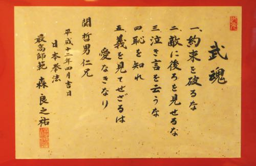

「日本拳法」は、昭和7年9月15日、澤山勝先生が大阪の洪火会（黒山高麿会長）本部道場で武道として創始されました。私は、戦争が激化していた
昭和18年に関西大学に入学。拳法部に入部しましたが、澤山先生は出征されており、昭和21年に先生が復員されてからご指導を受けるようになりました。
そして翌22年7月、郷里徳島に道場を開設。新聞社を辞めて指導に専念していたのが見込まれて、昭和28年、拳法会から日本拳法普及のため
東京へ派遣されました。
このとき澤山先生は宗家になられて宗海と号し、私は允許権を頂いて「日本拳法協会」を創立しました。これが波乱を起こしました。
協会の誕生を快く思わない人たちが分派行動とみなし、当初は吸収合併の話を持ち掛け、その後は勢力争いの様相となったのです。
澤山先生は後継者の指名をされないまま、昭和52年9月27日に亡くなられました。・・（略）・・
長年のボタンの掛け違いを正そうと、昭和59年1月20日、矢野文雄日本拳法会会長の謝罪もあって、日本拳法会と協会とが連合体制をとることに
なりましたが、その反動か、日本拳法会は昭和63年、協会から分派した勢力を傘下に加えました。・・（略）・・分裂策を行う人たちの心情は、
トマトやスイカの種を蒔き収穫を誇るようなものです。これに対して杉、桧の苗を育てる人には、数十年先の子孫のために木を植える心があり、
人間本来の面目があると思います。・・（略）・・
日本拳法が生まれ育った道場「洪火会」は、時代に大きな火をかかげるという理想のもと命名された、武道と修養の団体でした。
創始者の黒山高麿先生は、福岡県に生まれ、武道専門学校4期生、大阪府警察本部柔道師範を務めた。戦後は、福岡県芦屋町長（3期）。
柔道8段、昭和52年11月27日没。享年82歳でした。洪火会は大正末年に創設、本格的な活動期間は、本部会館が大阪市天王寺区東高津に
建設された昭和7年から、大阪空襲によって会館が焼失した昭和20年まででした。会活動の主軸は柔道部であった。昭和12年の会員名簿によると
正会員235名（教士六段9名、六段1名、教士五段19名、五段41名、四段52名等々）。洪火会は澤山勝師範の拳法部のほかに、一般青少年も
参加する敬天塾を設けた。私は昭和19年入門。黒山先生の武道家としての端正な生活、己には厳、人には寛という高潔な人格にふれ、
すっかり敬服してしまった。・・（略）・・
札幌では関哲男氏とホテルの一室で初めて面談しました（昭和57年7月1日）。関さんは立命館大学在学中、乾龍峯師範門下となり、
教師（名古屋市）となってからは山田洪志先生の組織に入り、昭和56年に帰郷後、札幌支部を設立した強者で、五段位保持者でした。
関さんは挨拶もそこそこに、私が武道誌に寄稿した記事内容について質問させてくださいと切り出した。私は『指導に形を創るなど研究を
加えたから、大阪の拳法とはすこし変わってきたと思う。澤山先生から指導を頂けなくなってからは、一任状を活用して、技術と精神面との
一貫性に心を尽くした。東京に出たことによって日本拳法は全国に普及した。澤山先生の期待に応えたと自負している。しかし、警察逮捕術の
競技化に日本拳法が注目されたことにより、私と澤山先生との関係が思わぬ展開となった。これでは相競い切磋琢磨するという協会の創立精神は
生かされない。対立し空転している現状は残念だ。・・（略）・・交流は途切れているが、ここにきては、時が解決してくれるほかないと
思っている』というような話をした。この後、第11師団・真駒内駐屯地での会合に同行し、終日行動を共にして別れた。
帰郷後まもなく、その関さんから速達便が届いた。「昨日、日本拳法会から会報『日本拳法』9月12日号が配布された。この中に森先生に
関する社会人連盟友田忠会長の一文が掲載されている」とあり、同封されていた紙面に目を通すと、私を一方的に誹謗して黙過できないので、
早速、発行人矢野文雄・・（略）・・筆者友田忠の各氏に対して、後藤田正晴会長、森良之祐最高師範連署の5頁に及ぶ抗議文を出した。
これに対して、矢野文雄会長より謝罪文が届き、10月16日には小西丕・・（略）・・の三氏が特使として謝罪のため上京した。
翌年秋には友田さんが船橋市の拙宅に来られ・・（略）・・「会長補佐を辞めるからこらえてくれ」と謝罪。私は、また仲良く語り合える日が
あるでしょうと慰留した。・・（略）・・